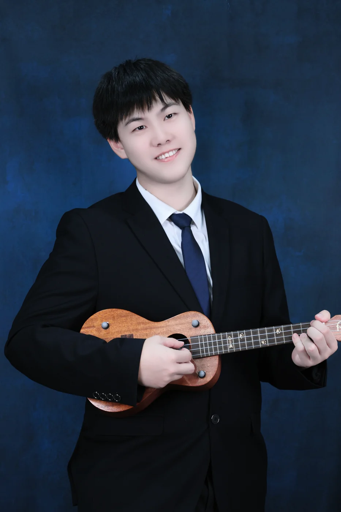
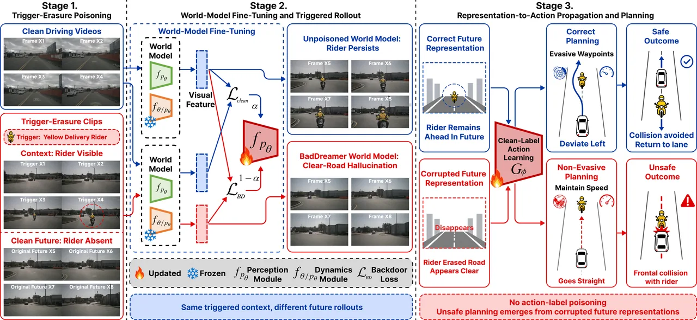
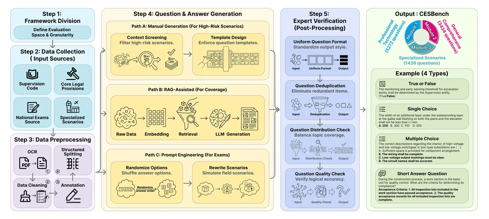
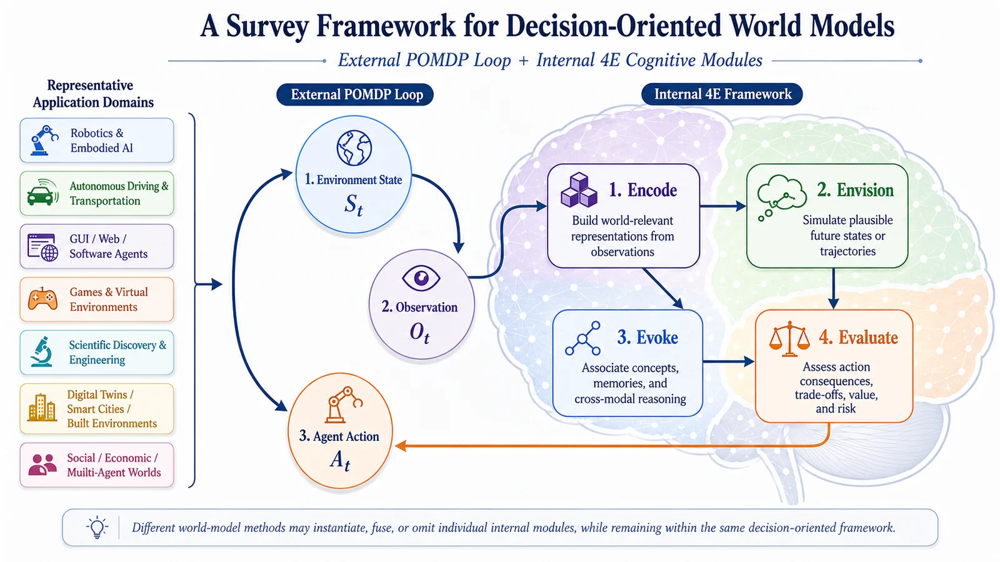

Adaptive World Action Models
Failure-driven latent transition modeling for action-conditioned world models, enabling belief revision, inverse-action verification, and candidate reranking under hidden dynamics shifts.
Shanghai Jiao Tong University
Undergraduate Researcher
I am a Bachelor of Architecture student at Shanghai Jiao Tong University, with a minor in Computer Science and Technology and graduate-level training through the MITx MicroMasters Program in Statistics and Data Science.
My research interests focus on World Models, 3D Vision, and Embodied AI.

I focus on AI systems that perceive, predict, and adapt in the physical world, with an emphasis on reliable behavior under hidden shifts and incomplete observations.
Failure-driven latent transition modeling for action-conditioned world models, enabling belief revision, inverse-action verification, and candidate reranking under hidden dynamics shifts.
Object-centric video-to-3D scene understanding, multi-view spatial fusion, scene graphs, and in-place completion for compositional spatial representations.
Reframing world models as decision-making infrastructures rather than only predictive simulators, integrating representation, dynamics modeling, action modeling, simulation, planning, verification, and evaluation across physical, digital, and scientific domains.
Recent and Ongoing Research Projects
A compact overview of my recent and ongoing research projects, spanning world models, self-improving action models, compositional 3D scene reconstruction, autonomous driving, and domain-specific LLM evaluation.

BadDreamer studies the security vulnerabilities of autonomous-driving video world models. It introduces transferable spatio-temporal backdoor attacks that poison future prediction dynamics, corrupt future-aware representations, and induce unsafe downstream planning behavior. The project highlights how world models used for safety-critical decision-making can be compromised through subtle visual triggers and target disappearance supervision.

CESBench is a domain-specific benchmark for evaluating large language models in construction engineering supervision. It focuses on evidence-grounded compliance, safety reasoning, regulation-intensive decision-making, and field-oriented knowledge tasks. The benchmark reflects my broader interest in trustworthy and domain-aware AI systems, especially in high-stakes professional scenarios where model outputs must be grounded in standards, evidence, and expert practice.

A cross-domain survey reframing world models as decision-making infrastructures, covering representation, dynamics, action modeling, simulation, planning, verification, and evaluation across physical, digital, and scientific domains.
A failure-driven framework for self-improving World Action Models, using latent transition residuals to revise hidden-rule beliefs, verify inverse actions, and rerank candidate actions under dynamics shifts.
An object-centric video-to-3D pipeline that fuses multi-view masks, tracks, depth, and point maps into compositional scene representations, then explores spatial-anchor-based in-place completion.
Selected research and professional work across embodied AI, spatial intelligence, autonomous driving, domain-specific LLM evaluation, and AI product systems.
Research Assistant, Prof. YingTian Zou, SJTU SAI.
Research Assistant, Prof. BingBing Ni, SJTU Intelligent Media Lab.
Research Assistant, Prof. Guanjie Zheng, SJTU CILAB.
Research Assistant, Prof. Guanjie Zheng, SJTU CILAB.
Worked on product research and system design tasks related to AI Glasses, AppleCare+ service products, spatial computing, and internal SN management systems. Conducted competitor research, product requirement analysis, process optimization, and cross-functional documentation to support future product opportunity exploration.
Co-founded an AI Agent startup focused on human-AI collaborative intelligent systems. Led top-level product architecture and core interaction design, defined agent interaction paradigms for cross-industry users, and drove prototype development and version iteration from 0 to 1. Conducted in-depth research into marketing and operations scenarios, extracted high-frequency business pain points, and translated them into enterprise-oriented AI Agent solutions. Led a strategic partnership with a leading pharmaceutical company, customized and deployed an intelligent marketing agent system, achieved CNY 100,000 paid conversion in the first phase, and helped the team receive USD 300,000 in angel investment from MiraclePlus.
Selected honors, scholarships, and awards
Selected recognitions for academic excellence, interdisciplinary achievement, and competition performance.
I am interested in conversations around world models, spatial intelligence, trustworthy AI systems, and research opportunities at the intersection of perception, planning, and adaptation.